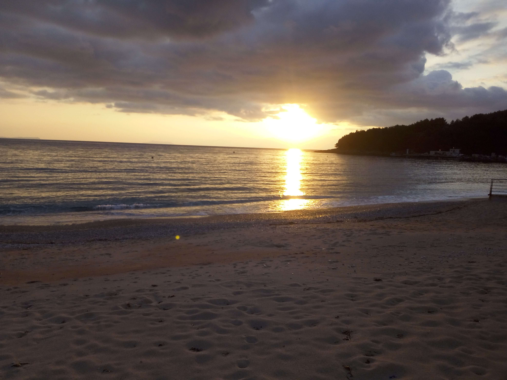

City Views of Sarandë
Sarandë, Albania · Ionian Coast
Sarandë is a picturesque coastal city in southern Albania, overlooking the Ionian Sea. Its waterfront, hillside buildings, and sweeping sea views make it a wonderful place to explore and photograph. The city offers beautiful views of the Ionian coastline and a relaxing atmosphere for visitors interested in discovering Albania's southern coast.
My Photo Gallery
Explore my personal travel photos from Sarandë.
View All Photos ↗